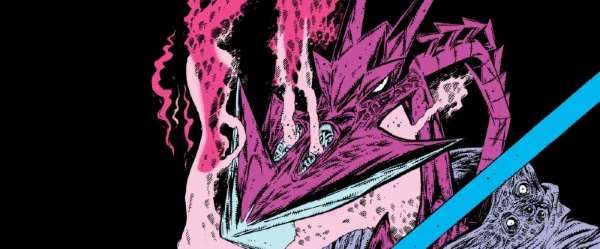

An alien freedom fighter battles a human supremacist in the far future.
As part of the wider Millsverse, the idea of the futuristic tubes of Termight (the Earth of the future) in Killer Watt were inspired by an earlier Ro-Busters story (The Fall and Rise of Ro-Jaws and Hammerstein). Characters from Ro-Busters then became first an editorial mainstay, then some of them filtered into spin-off strip The A.B.C. Warriors before crossing over into Nemesis.
So (for example) Mek-Quake, first of Ro-Busters in Starlord, becomes Tharg's enforcer in the Tharg the Mighty stories (and editorial commentary in general), then turns up (in a different body) in Book III of the Nemesis saga, before teaming up with The A.B.C. Warriors, both in Nemesis crossover tales and (latterly) in their own series.
Art by Kevin O'Neill